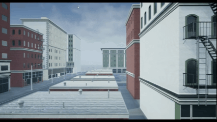

Overview:
Designed and tuned a cascaded control system for drone pitch stabilization and longitudinal position tracking using Simulink. While the inner pitch rate and angle loops were provided, I was responsible for achieving strict performance targets through tuning, and independently developed a 2-DOF PID controller for the outer position loop. This enabled smooth, accurate tracking with robust performance under nonlinear dynamics.
🎯 Control Objectives:
| Loop | Requirement |
|---|---|
| Pitch Rate | Tr < 0.25s %OS < 10% ess < 0.01 rad/s |
| Pitch Angle | Tr < 0.5s %OS < 2% ess < 0 rad |
| Position | Ts(2%) < 5s ess < 0 m |
Controller design:
Tuning Strategy:
To meet the system's dynamic constraints under nonlinear conditions, a 2-DOF PID controller was selected for the outer position loop. This structure allowed separate weighting of the reference input in the proportional and derivative paths, improving setpoint tracking and reducing derivative kick.
Due to the system’s nonlinearity, linear tuning methods like Ziegler-Nichols were avoided. Instead, a linearized approximation was used to obtain initial gains, followed by iterative tuning based on simulated step responses.
Controller Performance:
Gallery:
